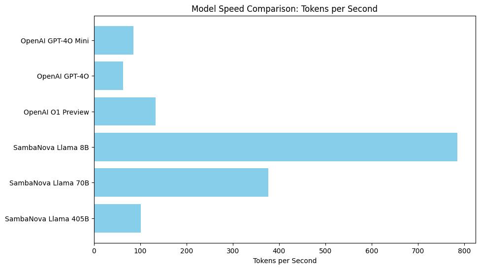

Model Speed Comparison Cookbook#
You can also check this cookbook in colab here
Overview#
In this section, we’ll explore the speed of different AI models by creating instances of ChatAgent and measuring their response times to user prompts.
Installation#
Ensure you have CAMEL AI installed in your Python environment:
[ ]:
!pip install "camel-ai==0.2.9"
Setting Up API Keys#
You’ll need to set up your API keys for OpenAI and SambaNova.
[ ]:
import os
from getpass import getpass
# Prompt for the API key securely
openai_api_key = getpass('Enter your OpenAI API key: ')
os.environ["OPENAI_API_KEY"] = openai_api_key
sambanova_api_key = getpass('Enter your SambaNova API key: ')
os.environ["SAMBA_API_KEY"] = sambanova_api_key
Enter your OpenAI API key: ··········
Enter your SambaNova API key: ··········
[ ]:
import time
import matplotlib.pyplot as plt
from camel.agents import ChatAgent
from camel.configs import SambaCloudAPIConfig, ChatGPTConfig
from camel.messages import BaseMessage
from camel.models import ModelFactory
from camel.types import ModelPlatformType, ModelType
# Create model instances
def create_models():
model_configs = [
(ModelPlatformType.OPENAI, ModelType.GPT_4O_MINI, ChatGPTConfig(temperature=0.0, max_tokens=2000), "OpenAI GPT-4O Mini"),
(ModelPlatformType.OPENAI, ModelType.GPT_4O, ChatGPTConfig(temperature=0.0, max_tokens=2000), "OpenAI GPT-4O"),
# NOTE: OpenAI O1 model requires additional additional credentials
(ModelPlatformType.OPENAI, ModelType.O1_PREVIEW, ChatGPTConfig(temperature=0.0), "OpenAI O1 Preview"),
(ModelPlatformType.SAMBA, "Meta-Llama-3.1-8B-Instruct", SambaCloudAPIConfig(temperature=0.0, max_tokens=2000), "SambaNova Llama 8B"),
(ModelPlatformType.SAMBA, "Meta-Llama-3.1-70B-Instruct", SambaCloudAPIConfig(temperature=0.0, max_tokens=2000), "SambaNova Llama 70B"),
(ModelPlatformType.SAMBA, "Meta-Llama-3.1-405B-Instruct", SambaCloudAPIConfig(temperature=0.0, max_tokens=2000), "SambaNova Llama 405B")
]
models = [(ModelFactory.create(model_platform=platform, model_type=model_type, model_config_dict=config.as_dict(), url="https://api.sambanova.ai/v1" if platform == ModelPlatformType.SAMBA else None), name)
for platform, model_type, config, name in model_configs]
return models
# Define messages
def create_messages():
sys_msg = BaseMessage.make_assistant_message(role_name="Assistant", content="You are a helpful assistant.")
user_msg = BaseMessage.make_user_message(role_name="User", content="Tell me a long story.")
return sys_msg, user_msg
# Initialize ChatAgent instances
def initialize_agents(models, sys_msg):
return [(ChatAgent(system_message=sys_msg, model=model), name) for model, name in models]
# Measure response time for a given agent
def measure_response_time(agent, message):
start_time = time.time()
response = agent.step(message)
end_time = time.time()
tokens_per_second = response.info['usage']["completion_tokens"] / (end_time - start_time)
return tokens_per_second
# Visualize results
def plot_results(model_names, tokens_per_sec):
plt.figure(figsize=(10, 6))
plt.barh(model_names, tokens_per_sec, color='skyblue')
plt.xlabel("Tokens per Second")
plt.title("Model Speed Comparison: Tokens per Second")
plt.gca().invert_yaxis()
plt.show()
# Main execution
models = create_models()
sys_msg, user_msg = create_messages()
agents = initialize_agents(models, sys_msg)
# Measure response times and collect data
model_names = []
tokens_per_sec = []
for agent, model_name in agents:
model_names.append(model_name)
tokens_per_sec.append(measure_response_time(agent, user_msg))
# Visualize the results
plot_results(model_names, tokens_per_sec)
/usr/local/lib/python3.10/dist-packages/camel/models/openai_model.py:107: UserWarning: Warning: You are using an O1 model (O1_MINI or O1_PREVIEW), which has certain limitations, reference: `https://platform.openai.com/docs/guides/reasoning`.
warnings.warn(
